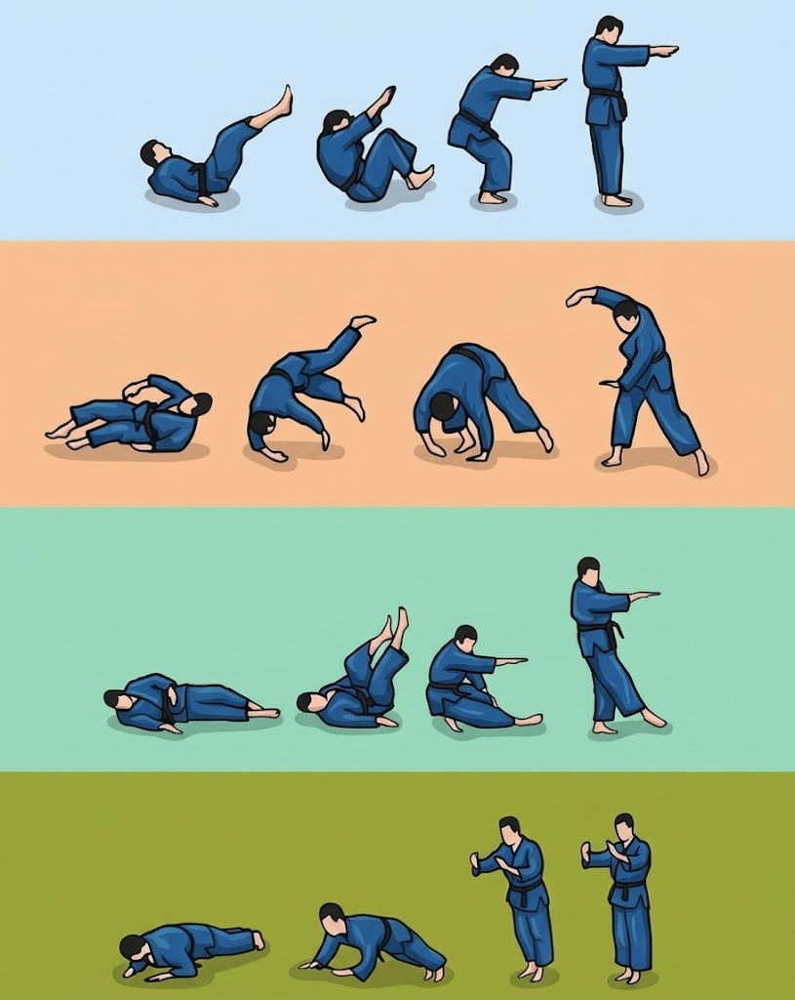

DOJO QUEST
Escolha seu Treino de Hoje
📚 1. História do Judô
História, princípios e pontuações da luta
🎗️ 2. Ordem das faixas
Organize a ordem vertical das 12 graduações
🔢 3. Contagem (1 a 20)
Aprenda e pratique números em japonês
🧘 4. Formas de Sentar
Seiza, Agura, Kyōshi-no-kamae e Anzai
🥋 5. Como amarrar a faixa
Vídeo ensinando o passo a passo da amarração
🇯🇵 6. Vocabulário do Judô
23 termos tradicionais e saudações
🤸 7. Ukemi | quedas
Clique direto no movimento e associe ao nome
🤼 8. Projeções em pé
Golpes de Ashi, Koshi e Te-waza
🤼 9. Ne-Waza | Técnicas de solo
Imobilizações fundamentais de controle
Pergunta
🤸 7. Ukemi | Quedas
Toque na queda correspondente na imagem e depois no nome correto:

Como Amarrar a Faixa (Obi)
Treine com o vídeo pausando até conseguir dar o nó correto sozinho!
Organize as Faixas da 1ª (Branca) à 12ª (Vermelha)
Dica no celular: toque na faixa para subir ou descer!
🥋 Ordem da Graduação (Topo para Base):
Faixas Disponíveis (Toque para colocar na pilha):